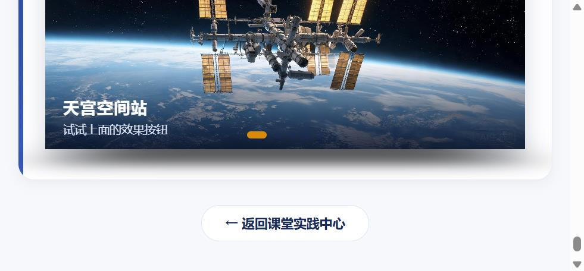
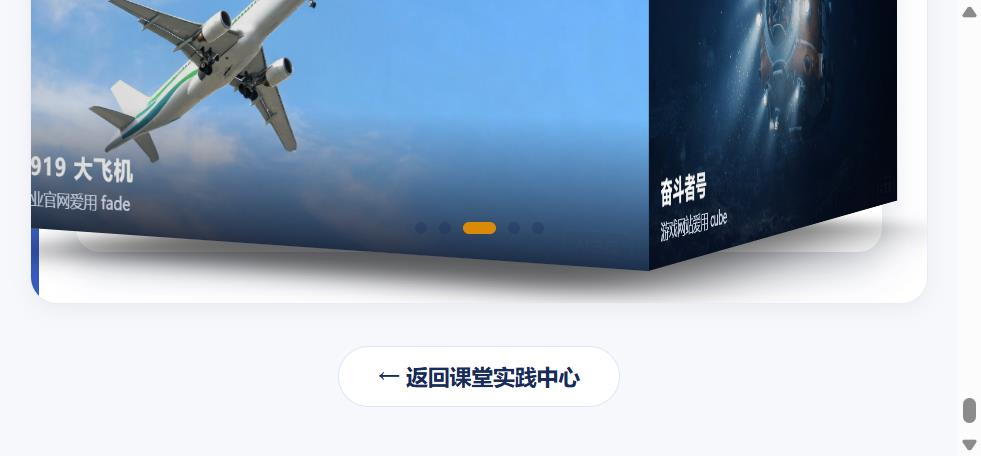

Swiper 轮播组件 · 大国重器光影展（学生版）
HTML 骨架和 CSS 样式已经全部搭好，图片也备齐了——但这个页面的轮播一个都不会动！ 因为所有 <script> 里的 JS 初始化代码都被抽走了。你的任务：把 4 个轮播全部"救活"。
① Swiper 组件库已通过 CDN 引入（页面第 8、9 行），不需要再写引入代码；
② 每个"演示台"下面的绿色卡片就是该任务的要求，JS 代码统一写在页面最底部的
<script> 区域内；③ 每完成一个任务就刷新页面验证：能拖、能点、会自己翻，才算通过；
④ 控制台（F12）报错是你要最好的朋友——先读报错，再改代码。
任务一 · 提示词工程师：让 AI 听懂需求不写代码写提示词 · 至少迭代 2 轮 · 保留每轮提示词与 AI 回答
把需求"翻译"给 AI，让它生成 new Swiper('#wySw4', {...}) 配置。下方保留两轮真实迭代记录：第 1 轮刻意写得笼统，验证 AI 的典型遗漏；第 2 轮按三个手段说清楚，一次给对。变量名沿用 wySw4——任务 4 进阶的销毁/重建逻辑依赖这个全局名。
🔵 第 1 轮 · 我的第一版提示词（描述愿望）
🤖 AI 第 1 轮回答
new Swiper('#wySw4', {
loop: true,
autoplay: true, // ❌ 布尔写法走默认：3000ms 不是 3200；拖动后自动播放直接停止
pagination: {
el: '.swiper-pagination' // ❌ 默认选择器绑到了页面上第 1 个分页器（共 4 个轮播）；且没写 clickable，圆点不可点
},
effect: 'cube'
})🧪 粘进页面验证（第 1 轮）
| 需求 | 结果 | 一句话结论 |
|---|---|---|
| ① 无缝循环 | ✅ | loop: true 写对了，最后一张能连回第一张 |
| ② 3.2 秒且拖后不停 | ❌ | 间隔是默认 3 秒；拖一下松手，自动播放就停了 |
| ③ 圆点可点击 | ❌ | 圆点错绑到第一个演示台；本台没有圆点，也点不动 |
| ④ 初始 cube | ✅ | 效果本身是 cube |

一句话结论：AI 只听懂了字面上的"有"，漏掉了所有精确限定——毫秒数、拖后不停、绑哪个圆点、能不能点。🔵 第 2 轮 · 修改思路：怎么"说清楚"的
② 补充页面上下文：告诉 AI 页面有 4 个轮播，分页器必须 el: '#wyPag4' 按 id 精确绑定；
③ 限定输出：指定 Swiper 11、只要 JS、不许改 HTML，压缩自由发挥空间。
🔵 第二版提示词（下达规格）
🤖 AI 第 2 轮回答
var wySw4 = new Swiper('#wySw4', {
loop: true,
autoplay: {
delay: 3200, // 3.2 秒，精确值
disableOnInteraction: false // 拖动后自动播放继续
},
pagination: {
el: '#wyPag4', // id 精确绑定第四个演示台
clickable: true // 圆点可点击跳转
},
effect: 'cube',
speed: 800
})🧪 粘进页面验证（第 2 轮）
| 需求 | 结果 | 一句话结论 |
|---|---|---|
| ① 无缝循环 | ✅ | 连续向后翻不中断，首尾无缝衔接 |
| ② 3.2 秒且拖后不停 | ✅ | 间隔确实 3.2 秒；拖动松手后自动播放继续走 |
| ③ 圆点可点击 | ✅ | 圆点出现在第四个演示台下方，点第 3 个立刻跳第 3 张 |
| ④ 初始 cube | ✅ | 打开页面即是 3D 立方体旋转效果 |

一句话结论：把"模糊形容词"换成"参数名 + 精确值 + 页面上下文 + 输出约束"后，AI 一次给对，4 项需求全部通过。任务二 · creative 仿写：课堂没讲，AI 教你第 7 种 effect · 读官方示例 + 追问记录
课堂只讲了 6 种 effect，Swiper 还有第 7 种——creative（自定义变换）。演示四新增第 7 个按钮「creative 电影墙」。
🎬 效果要求与实现
creativeEffect。💻 核心配置（写在切换按钮的重建逻辑里，仅 creative 时注入）
creativeEffect: {
perspective: true, // 开启透视：z 值才会产生"近大远小"
limitProgress: 2, // 相邻两张同时参与变换
shadowPerProgress: true, // 阴影随进度加深，立体感更强
prev: { // 上一张：缩小左移并带角度
translate: ['-22%', 0, -140], // x 左移 22%，z 后退 140px → 远离镜头变小
rotate: [0, 0, -8], // 绕 z 轴逆时针歪 8 度
opacity: 0.55
},
next: { // 下一张：放大右移进场
translate: ['102%', 0, 80], // x 从右侧画外进场，z 前进 80px → 贴近镜头显大
rotate: [0, 0, 6], // 顺时针歪 6 度
opacity: 0.85
}
}🗣️ 向 AI 追问并用自己的话写下：prev / next 的 transform 各控制什么？
prev 控制正在离开的那张（上一张）在过渡期间怎么"退场"——它往左挪 22%、朝屏幕深处退 140px（离镜头远了就显小）、逆时针歪 8 度、再变半透明，像被推到电影墙左侧远处的一张贴旧的海报；next 控制正在进场的那张（下一张）怎么"登场"——它从右边画外（102%）走进来、朝镜头方向凑 80px（离镜头近就显大）、顺时针歪 6 度，像有人从右边拿起一张新海报递到你眼前。一句话：prev 管退场姿势，next 管进场姿势；translate 里的百分号相对容器宽高，z 值负责"近大远小"。
🧪 验证结论
| 验证点 | 结果 | 一句话结论 |
|---|---|---|
| 第 7 个按钮出现且可点击 | ✅ | 按钮组末尾新增「creative 电影墙（任务二 · AI 教我）」，点击后高亮 |
| 上一张缩小左移带角度 | ✅ | 过渡中上一张明显左移、变小、逆时针歪斜并半透明 |
| 下一张放大右移进场 | ✅ | 下一张从右侧带角度进场，透视放大，像拿起新海报 |
| 整体"像电影选片墙" | ✅ | 三张错落堆叠：中间正常、左边远处一张歪的、右边进来一张大的 |
| 切回其它效果仍正常 | ✅ | creative 之后点 fade / cube 等，销毁重建后干净切换，无残留样式 |
任务三 · 综合创作 + 技术答辩：超纲加分项第六件展品 · zoom 双击缩放 · AI 对话记录
两件事：① 为光影展添加第六件展品「爱达·魔都号」（首艘国产大型邮轮，2024 年 1 月首航），图片由 AI 生成（横版 16:9），slide 结构完整，已加入页面全部四个演示；② 挑一个课堂没讲过的 Swiper 能力加上去——我选 zoom 双击缩放，做成页面底部独立的「双击缩放」演示模块（不动演示一）。
🛳️ 第 1 件事 · 第六件展品「爱达·魔都号」
swiper-imgs/adora_1.jpg；slide 结构与其它展品完全一致（img + wy-cap 标题 + 说明文字），四个演示轮播同步新增，圆点分页器自动变 6 个。（zoom 缩放单独做成了页面底部的「双击缩放」演示模块，四个演示台的 slide 保持课堂原样）🔍 第 2 件事 · 超纲能力 zoom 双击缩放（与 AI 的关键对话记录）
var nzwZoomSwiper = new Swiper("#nzwZoomSw", {
zoom: true // AI 第 1 轮回答：配置没问题，但页面上双击毫无反应（见下）
}).swiper-zoom-container 结构里才有作用对象——AI 不知道演示一的 slide 是 img + wy-cap 的自定义结构，直接给 zoom: true 等于装了引擎没装轮子。
<div class="swiper-slide">
<div class="swiper-zoom-container"> // 官方要求的缩放作用层，img 包在里面
<img src="swiper-imgs/tiangong_1.jpg" alt="天宫空间站">
</div>
<div class="wy-cap">…</div> // 说明文字留在容器外，不参与缩放
</div>
zoom: {
maxRatio: 3, // 双击最多放大到 3 倍（默认值，写出来便于答辩讲清）
minRatio: 1 // 还原倍数，再双击回到原始大小
}zoom: true 只开了前者，把 img 包进 swiper-zoom-container 才补上后者；说明文字放容器外面就不跟着放大。最终效果落地在页面底部独立的「双击缩放」演示模块，演示一保持任务 1 的最小形态。
🧪 验证结论
| 验证点 | 结果 | 一句话结论 |
|---|---|---|
| 第六件展品出现在四个演示 | ✅ | slide 结构完整，演示二/四的圆点自动变 6 个且可点 |
| AI 图横版 16:9 且能正常显示 | ✅ | adora_1.jpg 与其它展图同高裁切，不破版式 |
| 双击放大到 3 倍，再双击还原 | ✅ | 图片以点击点为中心放大，transform 确认 scale(3)，还原后回 1 |
| 放大后可拖动平移，说明文字不跟着放大 | ✅ | wy-cap 留在 zoom 容器外，字号始终不变；放大后拖动可看细节 |
| 原有功能不受影响 | ✅ | 自动播放、圆点、箭头、七种效果切换全部正常 |
救活最小轮播三行 JS · 让照片可以拖动
下面是"最小轮播"骨架：三层结构齐全，但因为没有初始化，照片僵在第一张。请写出初始化代码，让它至少可以按住拖动。
✍️ 任务 1 要求
在页面底部 <script> 中初始化 #wySw1，让它成为可拖动的轮播（最基础写法，一个空配置对象即可）。

天宫空间站
2022 年全面建成 · 中国人的太空家园

复兴号动车组
350 km/h · 世界商业运营最高时速

C919 大飞机
2023 年商业首航 · 国产干线客机翱翔蓝天

奋斗者号
10909 米 · 触碰地球第四极马里亚纳海沟

中国天眼 FAST
500 米口径 · 世界最大单口径射电望远镜
装上遥控器pagination 圆点 + navigation 箭头
HTML 里已经埋好了三个"遥控器"元素：#wyPag2（圆点）、#wyPrev2 / #wyNext2（左右箭头）。请通过配置让它们"通电"。
✍️ 任务 2 要求
初始化 #wySw2，实现 4 个效果：① 无缝循环（loop）② 切换动画时长 600 毫秒（speed）③ 圆点分页器且可点击跳转（pagination，别漏 el）④ 两侧箭头可切换（navigation）。
天宫空间站
三舱结构 · 神舟乘组常年值守
复兴号动车组
京张高铁智能驾驶 · 百年京张到智能京张
C919 大飞机
让中国人的大飞机梦照进现实
奋斗者号
坐底万米 · 深海探测进入"中国时代"
中国天眼 FAST
南仁东先生 22 年铸就的观天巨目
让它自己翻页autoplay 自动播放 + loop 无缝续播
网页 Banner 最常见的形态：自己会翻页。autoplay.delay 控制每张停留的毫秒数，disableOnInteraction: false 表示用户手动滑动之后自动播放不停止。
✍️ 任务 3 要求
初始化 #wySw3，实现：① 循环播放 ② 每 2.6 秒自动翻页 ③ 用户拖动之后自动播放继续 ④ 保留底部圆点分页器（#wyPag3）。
天宫空间站
巡天遥看一千河
复兴号动车组
中国速度 · 风驰电掣
C919 大飞机
蓝天之上 · 大国担当
奋斗者号
万米深潜 · 无畏探索
中国天眼 FAST
仰望星空 · 脚踏实地
六种效果随心换effect 参数 + 进阶：按钮实时切换
改一个 effect 参数，轮播立刻换一种"性格"：slide / fade / cube / coverflow / flip / cards。上面的 6 个按钮已经绑好了点击事件（读取 btn.dataset.fx），JS 还需要你补两段。
✍️ 任务 4 要求
基础分：初始化 #wySw4，实现循环 + 自动播放（3.2 秒）+ 圆点分页器（#wyPag4），初始效果为 'slide'，动画时长 800 毫秒。
进阶分：补全按钮点击事件中的 TODO——实现点击按钮切换效果。提示：Swiper 动态换 effect 不能只改参数，需要先销毁旧实例再重建（destroy + new）。
⭐ 验证标准：基础分——轮播自动翻页；进阶分——点 cube 按钮变 3D 立方体、点 fade 变淡入淡出天宫空间站
试试上面的效果按钮
复兴号动车组
同一组照片，六种讲述方式
C919 大飞机
企业官网爱用 fade
奋斗者号
游戏网站爱用 cube
中国天眼 FAST
相册页面爱用 coverflow
双击缩放 · zoom 超纲能力演示任务三 · 双击放大 3 倍，再双击还原
这是任务三选择并新增的课堂没讲过的 Swiper 能力：zoom。双击图片以点击点为中心放大到 3 倍，再双击还原；放大后按住拖动可平移查看细节。图片必须包在官方要求的 .swiper-zoom-container 里缩放才生效（踩坑过程见上方任务三的 AI 对话记录）。四个演示台保持课堂原样，此效果单独落地在本模块。
天宫空间站
双击我 · 放大 3 倍看细节
复兴号动车组
再双击 · 一秒还原
C919 大飞机
放大后按住拖动可平移
奋斗者号
zoom 靠 swiper-zoom-container 生效
中国天眼 FAST
放大看看正中的馈源舱